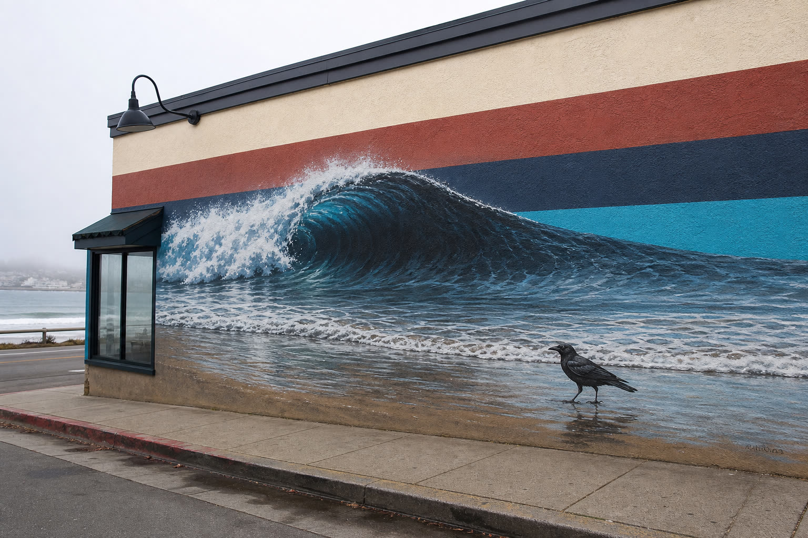
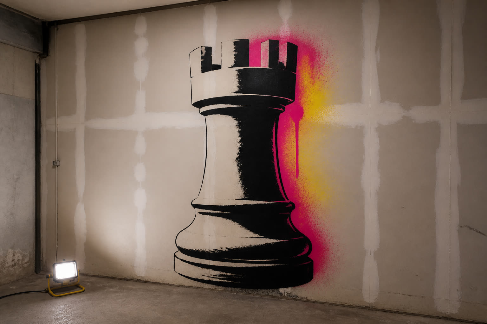
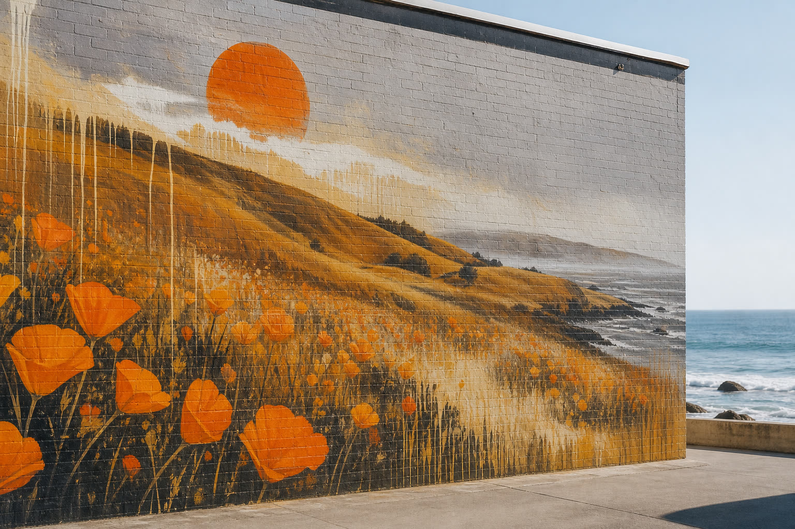
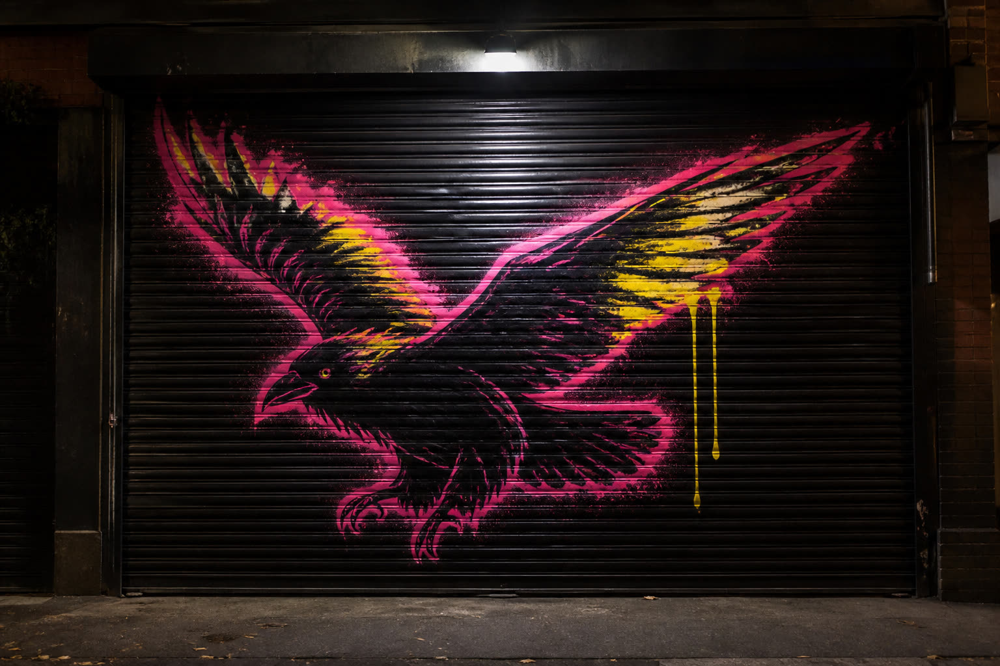
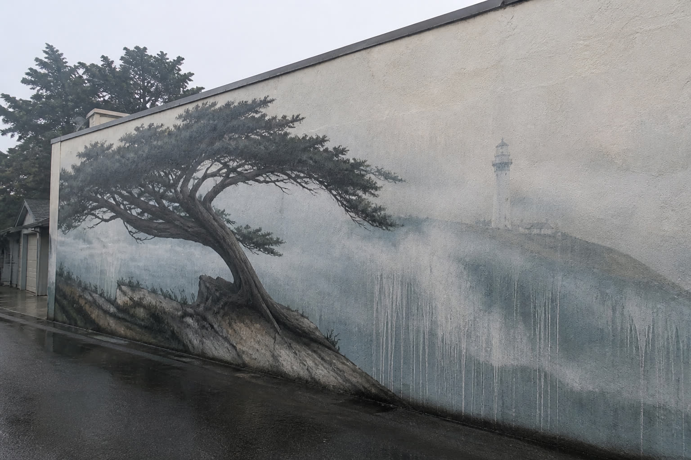

Tide Line — stacked seafoam, navy, and sand bands with overspray

Stencil Break — hard stencil edge with overspray bleed

Ochre Field — warm rust and fog color field

Night Can — black ground with magenta and acid spray

Fog Cap — grey field with cyan overspray and cream drips
Next
Have a wall.
Send the surface. We sketch after we have seen it.
Book a wall